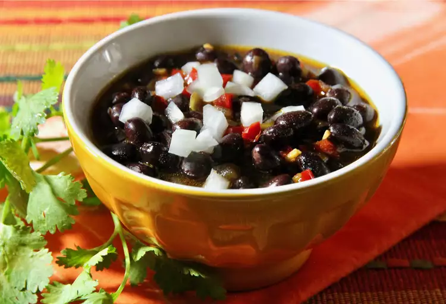

Frijoles negros

Frijoles negros is a popular dish among Mexico, a tasty way to eat beans, practical and easy to make
Ingredients:
- Beans
- Oil
- Salt
- Water
- Onion
- Worm Grass
Steps:
- -Boil the beans with an entire onion and the water, it can be done in a metal recipe or a pressure cooker, on a normal pot it takes 4-5 hours, 50 minutes on a pressure cooker
- -Once beans are soft and tender take them out of the fire, prepare another pot with oil and put the contents of the previous pot there, put salt to the like and let it boil for another 5 minutes
- -Take out the beans from the fire and add the worm grass if you like, serve them with tortillas and some chilitos
- -Enjoy!